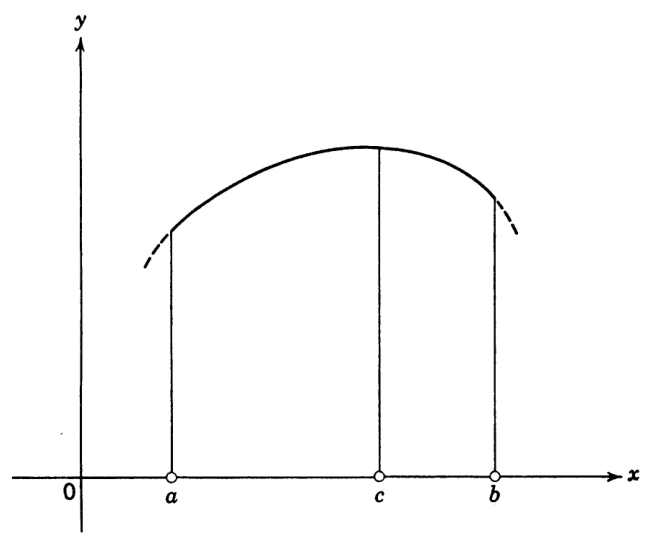
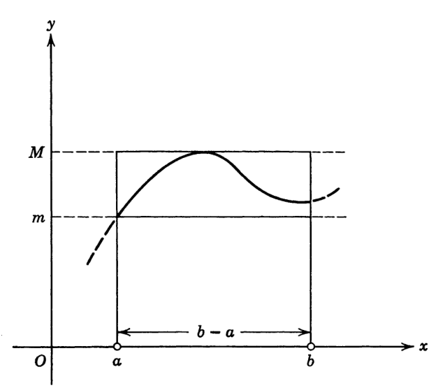
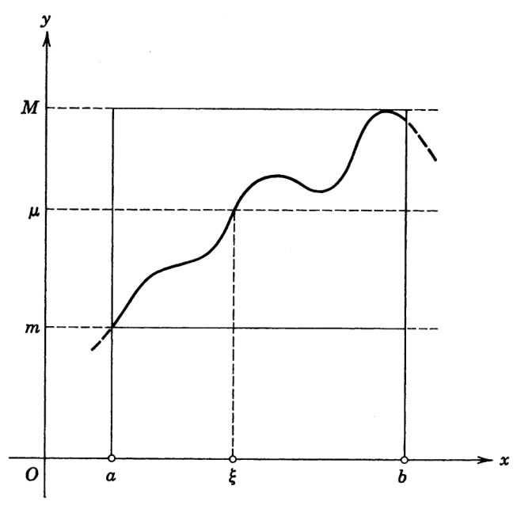

积分的基本性质直接来自积分作为和的极限这一定义：
∫abf(x)dx=n→∞limi=1∑nf(ξi)Δxi.这里 [a,b] 分成长度为 Δxi 的小区间，ξi 是第 i 个小区间中的任意一点，并要求 n→∞ 时最大的 Δxi 趋于零。
a. 对积分区间的可加性
设 c 是 a 与 b 之间任意一个值。把积分解释为面积，想起一个区域的面积等于各部分的面积之和（图 2.14），就得到法则
∫abf(x)dx=∫acf(x)dx+∫cbf(x)dx.(4)为从分析上证明它，我们选取分割时使 c 成为一个分点，设 c=xm（m 随 n 而变）。于是
i=1∑nf(ξi)Δxi=i=1∑mf(ξi)Δxi+i=m+1∑nf(ξi)Δxi.右边第一项对应于把 [a,c] 分成 m 个小区间，第二项对应于 [c,b] 上的分割。令 n→∞，即得积分的可加性公式。
到目前为止，我们只对 a<b 定义了 ∫abf(x)dx。当 a=b 或 a>b 时，规定积分的定义要使上述可加性法则继续成立。因此取 c=a 就必须规定
∫aaf(x)dx=0.(5)然后取 b=a，便得
∫acf(x)dx+∫caf(x)dx=∫aaf(x)dx=0.据此，当 c<a 时，我们定义
∫acf(x)dx=−∫caf(x)dx,(6)其中右边具有原先已确定的意义。它的几何意义是，若从积分下限向上限移动时 x 逐渐减小，曲线 y=f(x) 下的面积就要反号。稍看前面的积分例子，便可验证互换积分限 a 与 b 确实使积分值反号。

图 2.14
b. 和函数与常数倍函数的积分
设 f(x),g(x) 是任意两个（可积）函数。由极限运算的基本法则，
∫abf(x)dx+∫abg(x)dx=n→∞limi=1∑nf(ξi)Δxi+n→∞limi=1∑ng(ξi)Δxi=n→∞lim[i=1∑nf(ξi)Δxi+i=1∑ng(ξi)Δxi]=n→∞limi=1∑n[f(ξi)+g(ξi)]Δxi.于是就有两个函数求和的重要法则
∫abf(x)dx+∫abg(x)dx=∫ab[f(x)+g(x)]dx.(7)差的情形同样有
∫abf(x)dx−∫abg(x)dx=∫ab[f(x)−g(x)]dx.又，对任何常数 α，
∫abαf(x)dx=n→∞limi=1∑nαf(ξi)Δxi=αn→∞limi=1∑nf(ξi)Δxi,所以
∫abαf(x)dx=α∫abf(x)dx.(8)利用这两条法则，只要两个或多个函数可以分别积分，就可以对它们的“线性组合”积分。例如对任一二次函数 y=Ax2+Bx+C，其中 A,B,C 为常数，有
∫ab(Ax2+Bx+C)dx=∫abAx2dx+∫abBxdx+∫abCdx=A∫abx2dx+B∫abxdx+C∫ab1dx=3A(b3−a3)+2B(b2−a2)+C(b−a).同理，一般多项式 y=A0xn+A1xn−1+⋯+An−1x+An 的积分为
∫abydx=n+1A0(bn+1−an+1)+nA1(bn−an)+⋯+21An−1(b2−a2)+An(b−a).c. 积分的估计
关于积分，还有一个显而易见但十分基本的事实。设 a<b，且 f(x) 在 [a,b] 的每一点都为正或为零，则
∫abf(x)dx≥0.(9)只要写出积分是和的极限，并注意和中各项均非负，便立即可见。更一般地，若 f,g 在 [a,b] 中的每一点 x 都满足 f(x)≥g(x)，则
∫abf(x)dx≥∫abg(x)dx.(10)这是因为 f(x)−g(x) 从不为负，从而
∫abf(x)dx−∫abg(x)dx=∫ab[f(x)−g(x)]dx≥0.把这个结论应用于 [a,b] 上的连续函数 f(x)。设 M,m 分别为它在区间上的最大值和最小值。由于对一切 x∈[a,b] 都有 m≤f(x)≤M，因此
∫abmdx≤∫abf(x)dx≤∫abMdx.对任何常数 C 都有 ∫abCdx=C∫ab1dx=C(b−a)，于是得不等式
m(b−a)≤∫abf(x)dx≤M(b−a).(11)这给出了任何连续函数的定积分的简单上下界。从面积来看，这个估计也很直观。M(b−a) 和 m(b−a) 分别代表外接和内接矩形的面积，两个矩形有共同的底，长为 b−a（图 2.15）。

图 2.15
d. 积分中值定理
积分与平均值
从函数 f 在区间 [a,b] 上的平均值出发，可以对上述不等式作另一种有意义的解释。有限个量 f1,f2,…,fn 的平均值，即算术平均，是数
nf1+f2+⋯+fn.要给区间内任意 x 所对应的无穷多个量 f(x) 的平均值赋予意义，自然会想到先取出有限个值，例如 f(x1),f(x2),…,f(xn)，作平均 (f(x1)+⋯+f(xn))/n，再令 n 无限增大取极限。即使这个极限存在，它的值也将大大依赖于各点 xi 在 [a,b] 中怎样分布。要得到一个确定的平均值，可以把区间 [a,b] 分成 n 个长度 Δxi=(b−a)/n 相等的小区间，取分点为 xi。这时有
nf(x1)+⋯+f(xn)=b−a1i=1∑nf(xi)Δxi.显然，当 n→∞ 时，这些由 n 项算出的平均值趋于
μ=b−a1∫abf(x)dx=∫abdx∫abf(x)dx.称 μ 为 f 在区间 [a,b] 上的“算术平均”或平均值。于是，上述不等式就是说，连续函数的平均值不会大于它的最大值，也不会小于它的最小值（图 2.16）。

图 2.16 函数的平均值
由于 f(x) 在 [a,b] 上连续，它在区间中一定能取到 M 和 m。再由连续函数的介值定理，它也必在区间中某个点 ξ 取到介于两者之间的值 μ。由此证明了下面的定理。
中值定理。 设 f(x) 在区间 [a,b] 上连续，则区间内存在一个数 ξ，使
∫abf(x)dx=f(ξ)(b−a).(12)这就是简单而极重要的积分中值定理。用文字来说，连续函数在区间上的平均值属于函数的值域。定理只断言区间内至少有一点 ξ，使 f(ξ) 等于 f 的平均值，至于 ξ 在什么位置，它没有提供进一步的消息。注意，互换积分限 a,b，表达中值定理的公式仍然成立，所以 a>b 时定理也正确。
广义中值定理。 对 n 个量 f1,…,fn，除了简单的算术平均，经常还要考虑“加权平均”
p1+p2+⋯+pnp1f1+p2f2+⋯+pnfn=μ,其中“权” pi 是任意正量。例如，若 p1,p2,…,pn 真的是分别位于 x 轴上 f1,f2,…,fn 各点处质点的重量，则 μ 就是重心的位置。若各权 pi 相等，μ 就是前面定义的算术平均。
类似地，对函数 f(x) 可以作它在 [a,b] 上的加权平均
μ=∫abp(x)dx∫abf(x)p(x)dx,(13)其中权函数 p(x) 是区间内任意的正函数。取 p 为正保证分母不为零。加权平均 μ 也介于 f 在区间内的最大值 M 与最小值 m 之间。事实上，不等式 m≤f(x)≤M 乘以正数 p(x)，得 mp(x)≤f(x)p(x)≤Mp(x)。再积分，得
m∫abp(x)dx≤∫abf(x)p(x)dx≤M∫abp(x)dx.除以正数 ∫abp(x)dx，的确有 m≤μ≤M。若 f(x) 连续，由介值定理（第 44 页），区间内有某个合适的数 a≤ξ≤b，使 μ=f(ξ)。于是得到积分的广义中值定理：
若 f(x) 和 p(x) 在区间 [a,b] 上连续，而且 p(x) 在该区间为正，则区间内有一个值 ξ，使
∫abf(x)p(x)dx=f(ξ)∫abp(x)dx.(14)特殊情形 p(x)=1 就是前面的中值定理。
译者注 图 2.16 中，水平线高度 μ 的选取使宽为 b−a 的矩形面积恰等于原积分。定理保证曲线确实会经过这个高度。加权时，p(x) 大的那一段对平均值影响更大，不过只要权为正，平均值仍不会超出函数的取值范围。